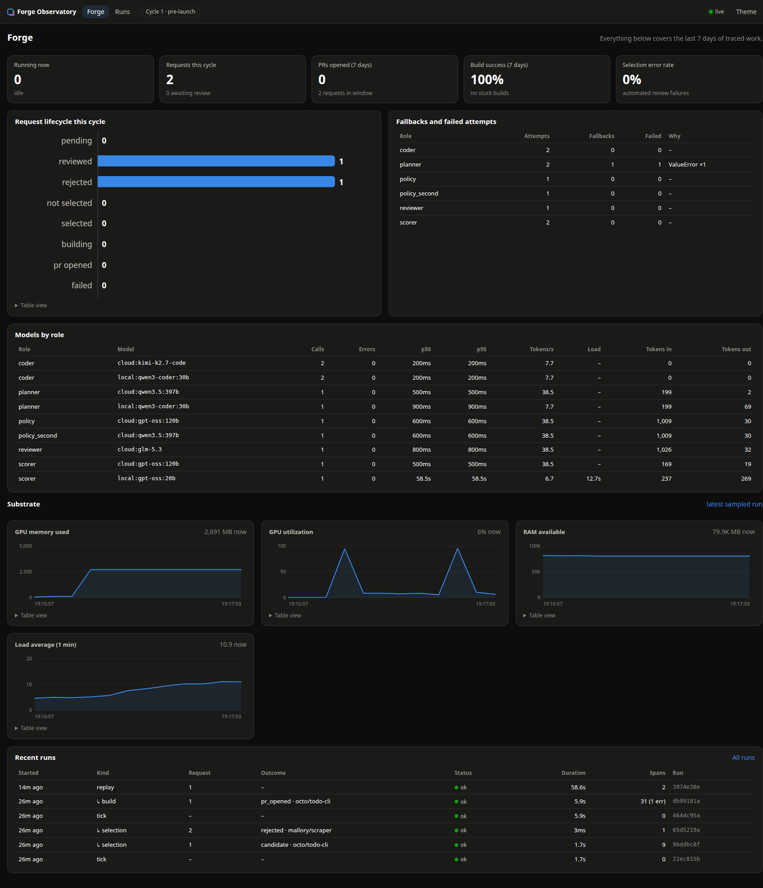
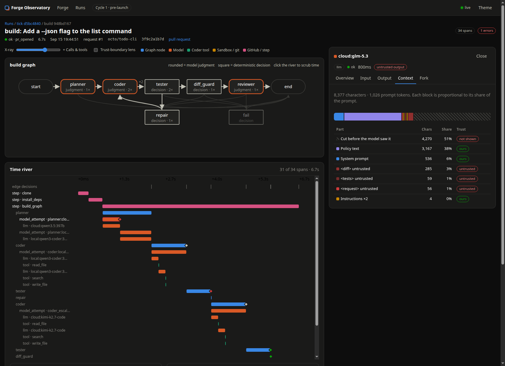

← Amit Patole · Case study
A multi-agent system that takes a plain-English feature request for a public repository, plans it, writes the code, tests it in a sandbox, reviews it, and delivers a pull request — and the observability layer that makes every one of those steps visible down to the token.
Status
Built and unit-tested end to end; the first submission window opens 19 September 2026. Each stage has been exercised live on the build machine, but a full cycle against a live repository has not run yet, so no pull requests have shipped. Everything below describes what is built and verified, not what is promised.
Coding agents are easy to demo and hard to trust. The failure is rarely the model writing bad code; it is that nothing independent ever checks the work before it reaches someone else's repository. A pipeline “succeeded.” A test “passed.” Neither means the change is correct, safe, or wanted.
Forge is the engineering answer to a question I keep returning to: when a model produces an output, what does it actually mean for the work to be done? Its rule is that nothing is published until a grader returns a verdict — and that the graders are not the agent that did the work.
Requests arrive through a small public site. Ownership is proven by committing a token file to the repository's default branch, so nobody can commission work on someone else's code. Work runs in two-week cycles: one week open for submissions, rated nightly on a public board, then one week of building the winners.
A deterministic gatekeeper runs first, because the cheapest filter should never need a model: intake re-checks, repository state, account age, ownership proof. Then two policy judges from different model families must both approve, against a strict global ethical standard, with a high floor on safety and ethics scores. The model's own allowed flag is never trusted on its own; every condition is re-checked in code. Ranking the survivors is plain Python, not a model.
A planner writes an implementation brief. A local model does the volume coding work; repairs escalate to a stronger cloud model. Then three checks run in a deliberate order: the tests we run ourselves (never the coder's claim), deterministic diff guardrails (so a model never gets to wave through a hard rule), and only then a reviewer from a different model family than the coder. Each check returns the same report shape, so the graph routes on one field, the coder receives one kind of feedback, and a repeated failure signature stops the loop instead of burning quota on a stuck agent.
Publishing — fork, commit, push, open the pull request — happens outside the graph, reachable only when it ends in approved. That one structural choice means no bug in the agent logic can publish anything.
Untrusted code runs only inside a locked-down container: no network, all capabilities dropped, read-only root, unprivileged user. Dependency installation is a separate, allowlisted, network-enabled phase that the model never influences. The git directory is kept outside the sandbox mount, so nothing running in the container can plant hooks the host would later execute. Request text, repository contents, model output and test output are all treated as untrusted data that crosses into trusted code only as tagged prompt sections or typed fields.
Forge is where the verified-AI family stops being separate libraries and becomes one system. Every check returns an agentsensory report, so the graph has a single contract to route on. Verel grades the tests inside the sandbox and returns attested verdicts. assaylab turns raw failures into root-cause signatures the coder can act on. latenzy measures every model call. Vitel holds the factory itself to SLOs, because “the service is up” is not “the service is working.”
Latency metrics and a log file answer neither of the questions that actually matter when an agent run goes wrong: why did this specific run do that? and what would have happened if it hadn't? So I built an observability layer for Forge designed around a single image: looking at the system the way a being from a fourth dimension would look at a human — every layer at once, and the ability to drill down to the smallest part while it is still moving.

Causality threads
Every node's state is recorded key by key, content-addressed so an identical value is stored once. Click any output and the trail runs backwards through every value that produced it: this review saw that diff, which came from that guard, after that test report. “Why did the reviewer approve this?” stops being archaeology.
Prompt anatomy
The prompt is rendered as proportional blocks — system, policy text, schema guide, and each untrusted section — with what truncation cut off drawn as a hatched gap. On a real build it read: 51% of the diff, never seen by the model. That blind spot had existed for weeks and was invisible in every log.
Forking a recorded call
Any captured model call can be re-run against a different model, with edited messages, side by side with the original. Because publishing lives outside the graph, a fork is only a model call — it cannot touch a workspace, git, or GitHub. Debugging becomes experimenting.
A bug it found immediately
Instrumenting the GitHub client surfaced an ownership check that always raised, because one argument was passed twice. Unit tests never caught it: they mocked that function. In production it would have failed every verification, silently, on the one gate that proves a requester owns the repository.

| Concern | Approach |
|---|---|
| Orchestration | LangGraph state machines; deterministic routing functions over typed agent output |
| Agents | Five specialized roles — policy, scorer, planner, coder, reviewer — each with one job and one typed schema |
| Model routing | Role-based: local models for volume, larger hosted models for judgment, with automatic fallback on error or invalid output |
| Isolation | Docker with no network, dropped capabilities, read-only root, unprivileged user |
| Verification | Verel attested test verdicts, assaylab root-cause signatures, agentsensory report contract, Vitel SLOs |
| Observability | Purpose-built trace store in SQLite, LangChain callbacks, graph wrappers, a local dashboard, latenzy metrics |
| Operations | SQLite with WAL, systemd timer, tunnel-only exposure, no open ports |
| Hardware | A single laptop with a small consumer GPU, plus hosted inference for the judgment calls |
Unit tests cover every route through both graphs with the agents faked out: the happy path, escalation, bounded repair, stall detection, the guardrail blocking before review, reviewer feedback returning to the coder, a security veto, planner refusal, ranking, policy rejection and injection flags. The observability layer has its own suite covering span nesting, secret redaction, causality, the security guards, forking, and the promise that a broken trace store cannot break a build.
Verified live on the build machine: typed output from local models, an attested test failure followed by a pass inside the sandbox, a root-cause signature from a real failure, blocked network egress from the container, recorded per-model latency, SLO grading, and a fork of a recorded call re-run against a local model. Not yet run: a full cycle end to end against a live repository, which needs the first submission window to open.
The design record behind all of this runs to fifty-one numbered decisions, each with its rationale, the alternatives considered, and the trade-off accepted. The repository is private; I am happy to walk through the architecture, the decision record, or the observability layer in detail.